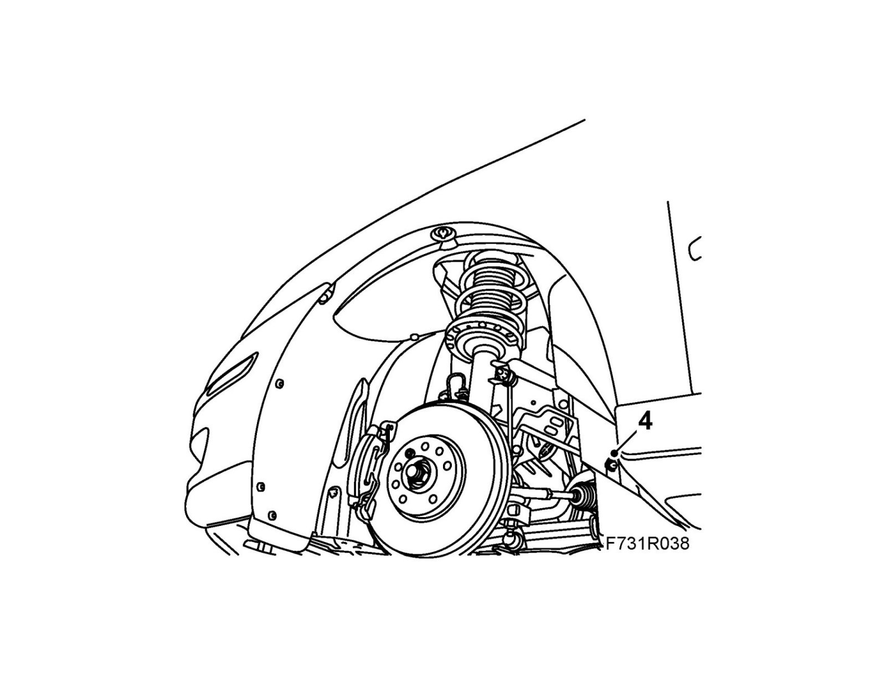
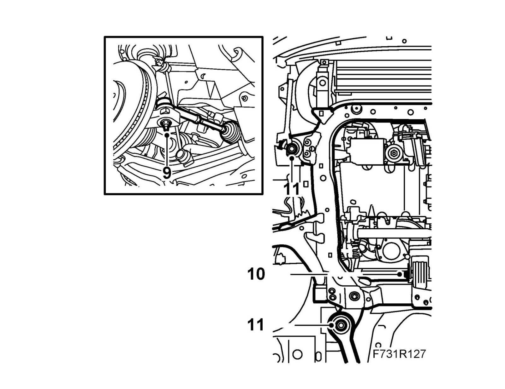
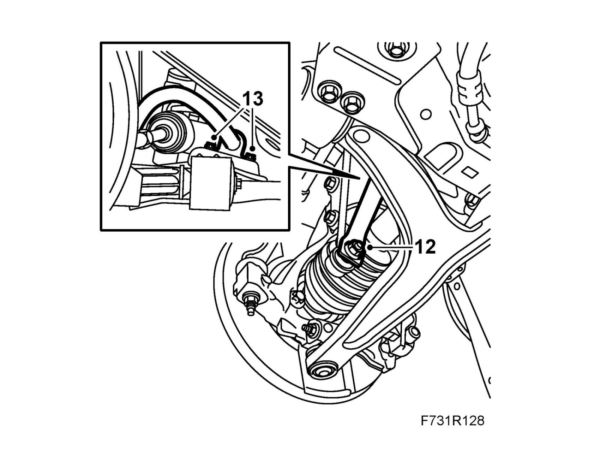
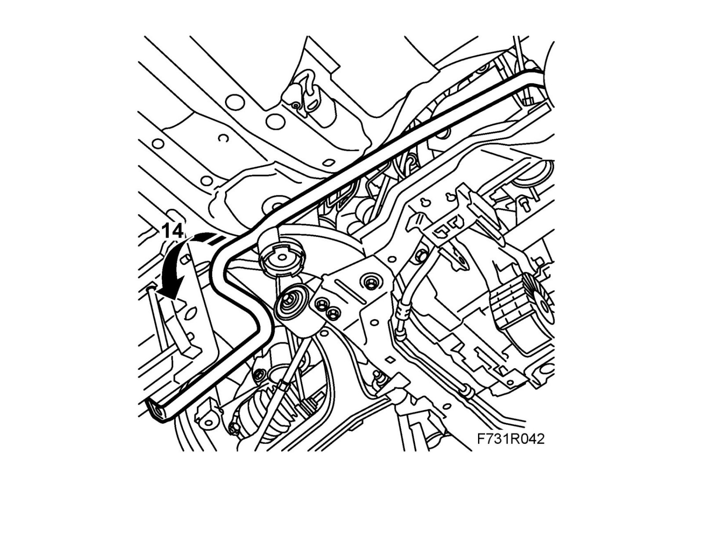
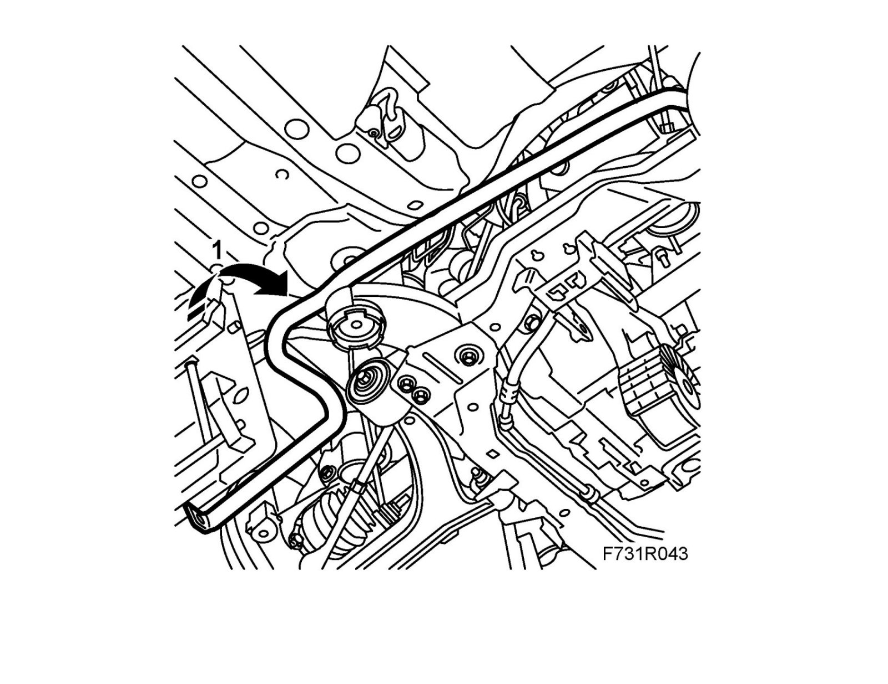
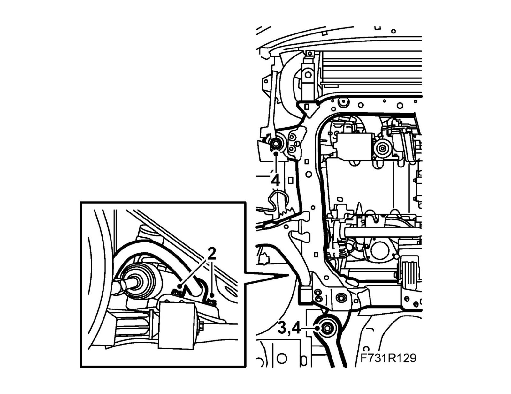
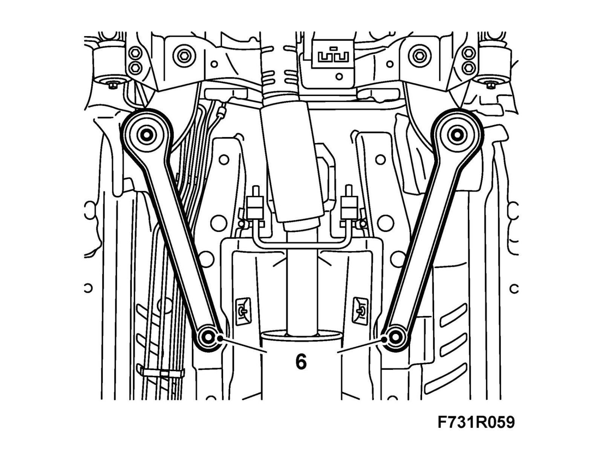
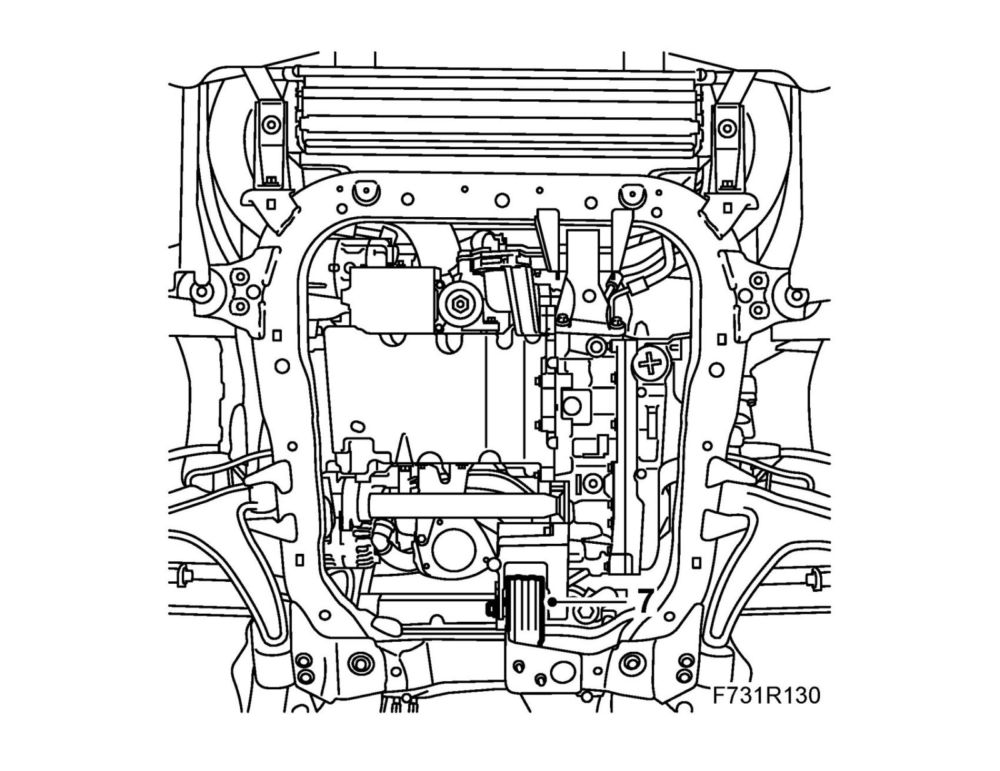
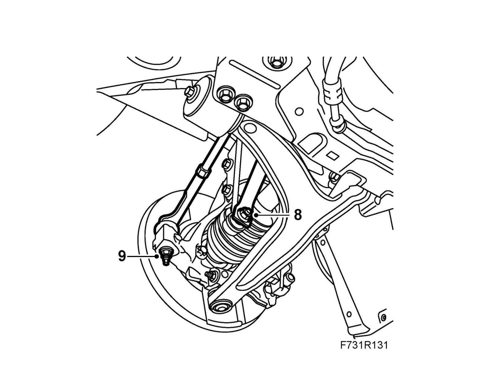
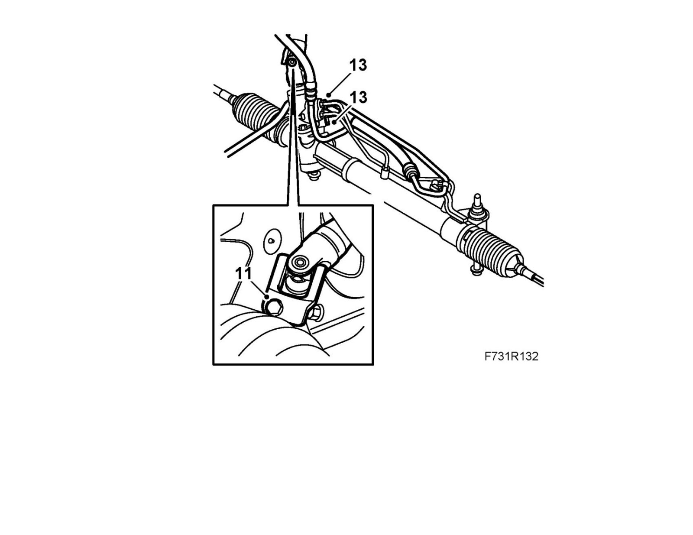

Front Suspension
Anti-roll bar, B207To remove
1. Place the wheel in a straight forward position using cloth tape on the instrument panel, for example.
B284 RHD: Clamp the return hose and feed hose using 30 07 739 Hose pinch-off pliers.
2. Raise the car.
3. LHD: Remove the front left wheel.
RHD: Remove the front right wheel.
4. LHD: Remove the rear nut from the wing liner on the left-hand side.
RHD: Remove the rear nut from the wing liner on the right-hand side.

5. Remove the spoiler shield.
6. B207: Cut the exhaust pipe at right angles 87 mm in front of the front silencer using 83 95 667 Pipe cutter/exhaust system. Remove the front part of the exhaust pipe. Clean the cut section of burrs and dirt.
7. B207 US/CA: Remove Rear catalytic converter, US/CA.
8. Remove the steering shaft from the steering gear.
9.

LHD: Remove the track rod from the steering swivel member on the left-hand side using 87 91 287 Puller, 150 mm.
RHD: Remove the track rod from the steering swivel member on the right-hand side using 87 91 287 Puller, 150 mm.
10. Remove the rear engine torque arm from the subframe.
11. Remove the rear subframe bolts and stays. Slacken the front bolts several turns. Hold down the subframe with wedges.
12. Remove the anti-roll bar links from the anti-roll bar. Hold with a thin 17 mm open wrench.

13. Remove the anti-roll bar from the subframe.
Note
The bush and bearing cap are attached to the anti-roll bar.
14. LHD: Pull out the anti-roll bar to the left between the bulkhead partition and the subframe.
RHD: Pull out the anti-roll bar to the right between the bulkhead wall and the subframe.

To fit
1. Pull the anti-roll bar up between the bulkhead partition and the subframe.

2. Fit the anti-roll bar to the subframe.
Tightening torque 18 Nm (13 lbf ft).

3. Lift up the subframe to the body.
Insert the bolts for the subframe and stays on both sides.
4. Raise the subframe using 83 95 311 Trolley lift with 83 94 801 Parent fixture and 83 96 137 Centering tool, subframe - body. Fit the tool in the guide holes in the body. Fit the stays and bolts.
Tightening torque 75 Nm +135° (55 lbf ft +135°)
5. Lower and pull away the trolley lift.
6. Tighten the rear stay bolts.
Tightening torque 90 Nm +45° (66 lbf ft +45°)

7. Fit the rear engine torque arm to the subframe.
Tightening torque 80 Nm (59 lbf ft)

8. Fit the anti-roll bar links on both sides. Hold with a thin 17 mm open wrench.
Tightening torque 64 Nm (47 lbf ft)

9. LHD: Fit the left-hand track rod to the steering swivel member.
LHD: Fit the right-hand track rod to the steering swivel member.
Tightening torque 35 Nm (26 lbf ft)
10. Fit the rear wing liner edge.
11. Fit the steering shaft to the steering gear. Make sure that the groove in the steering gear shaft is correctly positioned so that the bolt fits in the groove. Use Threadlock, Loctite 242.
Tightening torque 30 Nm (22 lbf ft)

12. B207: Fit the front part of the exhaust pipe and fit a splice (see EPC).
Tightening torque 40 Nm (30 lbf ft)
B207 US/CA: Install Rear catalytic converter, US/CA.
13. B284 RHD: Fit the delivery line and return line to the steering gear using new O-rings.
Tightening torque 12 Nm (9 lbf ft).
14. Fit the spoiler shield.
15. Fit the wheel.
16. Lower the car to the floor.
17. Remove the steering wheel fixing.
18. B284 RHD: Remove the hose pinch-off pliers. Fill with power steering fluid following specification, bleed the power steering system and check for leaks.